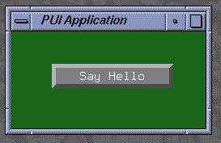
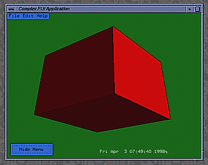
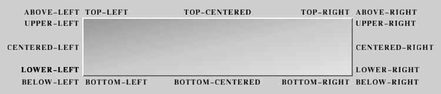
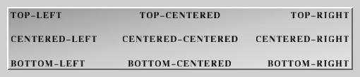

|
|
PUI: A Picoscopic User InterfaceProgrammers Guide. |
Because PUI's widget rendering is performed using OpenGL calls, it is well suited to the job of adding a few simple GUI elements to a game or other interactive program where the GUI is required to overlay (often transparently) some 3D rendering. By using OpenGL calls, PUI is much faster than most other GUI libraries on systems with 3D rendering hardware.
PUI is now a part of PLIB.
The PUI FAQ list is here. There is also a short introduction to the basics of PUI from John F. Fay.
Like most similar GUI's (MUI, Xforms, FLTK, GLUI, etc), PUI is comprised of a base class (puObject) from which all the interesting widgets are derived. Most of the packages functionality is concentrated in the puObject class.
AbdulWajid Mohamed added the 'PUSTYLE_SHADED' and 'PUSTYLE_SMALL_SHADED' code. He also fixed a number of bug fixes.
Dave McClurg added the puListBox and puFilePicker widgets.
John F. Fay added a few widgets and other things and reworked this document.
Classes: |
Non-class functions: |
|
widget_list.cxx. However, by changing the rendering
style, you can make them look considerably different from this.
| Here is a simple example program. It pops up a window with a single button widget that prints 'Hello World.' to stdout when you click it. (This program is in the PUI examples directory as 'simple.cxx'). |  |
#include <stdio.h>
#include <stdlib.h>
#include <string.h>
#ifdef WIN32
#include <windows.h>
#else
#include <unistd.h>
#endif
#include <math.h>
#include <GL/glut.h>
#include <plib/pu.h>
void motionfn ( int x, int y )
{
puMouse ( x, y ) ;
glutPostRedisplay () ;
}
void mousefn ( int button, int updown, int x, int y )
{
puMouse ( button, updown, x, y ) ;
glutPostRedisplay () ;
}
void displayfn ()
{
glClearColor ( 0.1, 0.4, 0.1, 1.0 ) ;
glClear ( GL_COLOR_BUFFER_BIT ) ;
puDisplay () ;
glutSwapBuffers () ;
glutPostRedisplay () ;
}
void button_cb ( puObject * )
{
fprintf ( stderr, "Hello World.\n" ) ;
}
int main ( int argc, char **argv )
{
glutInitWindowSize ( 240, 120 ) ;
glutInit ( &argc, argv ) ;
glutInitDisplayMode ( GLUT_RGB | GLUT_DOUBLE | GLUT_DEPTH ) ;
glutCreateWindow ( "PUI Application" ) ;
glutDisplayFunc ( displayfn ) ;
glutMouseFunc ( mousefn ) ;
glutMotionFunc ( motionfn ) ;
puInit () ;
puOneShot *b = new puOneShot ( 50, 50, 200, 80 ) ;
b -> setLegend ( "Say Hello" ) ;
b -> setCallback ( button_cb ) ;
glutMainLoop () ;
return 0 ;
}
Notice that the program uses a pretty conventional GLUT startup sequence,
with the usual callbacks for mouse events and redisplay. You can even continue
to use GLUT popup menus which will work quite happily in conjunction with
PUI menus.
The needs of PUI are small - as a minimum, call the puMouse function whenever the mouse is clicked or dragged, call the puKeyboard function whenever a key is pressed, call the puDisplay function frequently enough to maintain smooth interactions.
The creation of the user interface is similarly simple, calling the constructor function for the objects you need (with the dimensions of the active area of each object) - then add labels, legends, callback functions, etc.
Whenever the puMouse function detects that the mouse coordinate lies over an active widget, it calls the user-supplied callback function and takes the necessary actions to update the graphics on the next call to puDisplay.
| This is a more complicated example in the PUI example directory called 'complex.cxx', it produces a menu and a button that float in front of a tumbling cube that is rendered in OpenGL. In a second window are two sliders which allow the user to control the speed and direction of the cube's rotation. A third window contains a bi-slider and a tri-slider which truncate the cube in two directions. |  |
static void mousefn ( int button, int updown, int x, int y )
{
if ( !puMouse ( button, updown, x, y ) )
{
// PUI didn't take the mouseclick, try the main window
mouse_x = x ;
mouse_y = puGetWindowHeight () - y ;
// Check for an active widget.
// If there is one, call its active callback
if ( puActiveWidget () )
puActiveWidget () -> invokeActiveCallback () ;
}
glutPostRedisplay () ;
}
First the mouse function calls puMouse to see if the user clicked
on a new PUI widget. If the user did not, puMouse returns FALSE
and the function executes the contents of the if-block. It saves
the mouse coordinates in a pair of global variables and, if there is an
active widget, it invokes the active widget's active callback. This
active callback will invoke the OpenGL select mode, create the pick matrix,
and redraw the window to get the selected objects. The PUI examples
directory has a program, "PointPicker", which does this.
puFont::puFont ( void *glut_font ) ; puFont::puFont () ;Where 'glut_font' is a GLUT_BITMAP font.
In case of the second constructor which does not take any arguments at all, a puFont is created from the GLUT_BITMAP_8_BY_13 fixed font, which can be considered as the default PUI font.
Since there are only seven GLUT_BITMAP fonts, these have all been pre-declared within PUI (mainly for backwards compatability with PLIB versions before 1.0.7).
extern puFont PUFONT_8_BY_13 ; - 8x13 Fixed width extern puFont PUFONT_9_BY_15 ; - 9x15 Fixed width extern puFont PUFONT_TIMES_ROMAN_10 ; - 10-point Proportional extern puFont PUFONT_TIMES_ROMAN_24 ; - 24-point Proportional extern puFont PUFONT_HELVETICA_10 ; - 10-point Proportional extern puFont PUFONT_HELVETICA_12 ; - 12-point Proportional extern puFont PUFONT_HELVETICA_18 ; - 18-point ProportionalThese are light on storage - but slow to render on most hardware-based OpenGL implementations because GLUT uses glBitMap to render its glyphs. If you wish to use PLIB on a software-only OpenGL implementation (Good Luck!) then you'll want to use these GLUT fonts since glBitMap is usually faster than texture-mapped text.
puFont::puFont ( fntTexFont *tex_font,
float pointsize, float slant = 0 ) ;
Where 'tex_font' is texture-based font created using the
FNT
library and setting the pointsize and optional italic slant (both measured
in pixels).
After the puFont has been constructed, you can retrieve the height or
width of a certain amount of text:
int puFont::getStringHeight ( void ) const ; int puFont::getStringHeight ( const char *str ) const ; int puFont::getStringWidth ( const char *str ) const ;The getStringHeight routine that does not take any parameters returns the height of the "K" character.
Note that always the height excluding the descender is returned. There is another function which allows you to determine the font descender:
int puFont::getStringDescender ( void ) const ;The following function can be used to draw some text at a specific position:
void puFont::drawString ( const char *str, int x, int y ) ;However, this is not the recommended way of positioning text on the user interface. Instead, have a look at the puText widget.
When you declare most widgets, you must define the size of ABOX for the widget. (This is actually the pixel coordinates of the rectangle around the active area of the widget - with the origin at bottom-left of the window).
puObject::puObject ( int minx, int miny, int maxx, int maxy ) ;(Some widgets need more or fewer arguments to their constructor - but most follow this scheme).
You can always find the type of an object derived from puObject by calling:
int puObject::getType ( void ) const ;This returns a bitmask showing the inheritance of any object derived from the puObject base class:
#define PUCLASS_VALUE #define PUCLASS_OBJECT #define PUCLASS_GROUP #define PUCLASS_INTERFACE #define PUCLASS_FRAME #define PUCLASS_TEXT #define PUCLASS_BUTTON #define PUCLASS_ONESHOT #define PUCLASS_POPUP #define PUCLASS_POPUPMENU #define PUCLASS_MENUBAR #define PUCLASS_INPUT #define PUCLASS_BUTTONBOX #define PUCLASS_SLIDER #define PUCLASS_DIALOGBOX #define PUCLASS_ARROW #define PUCLASS_LISTBOX #define PUCLASS_DIAL #define PUCLASS_FILEPICKER #define PUCLASS_FILESELECTOR #define PUCLASS_BISLIDER #define PUCLASS_TRISLIDER #define PUCLASS_VERTMENU #define PUCLASS_LARGEINPUT #define PUCLASS_COMBOBOX #define PUCLASS_SELECTBOXHence, if you declare an object of (say) class puOneShot, then calling getType() for that object would return
PUCLASS_VALUE | PUCLASS_OBJECT | PUCLASS_BUTTON | PUCLASS_ONESHOT(since a puOneShot is a kind of puButton which is a kind of puObject which is [although not documented that way here] a kind of puValue).
For the purposes of printing diagnostics, etc there is also:
const char *puObject::getTypeString ( void ) const ;...which returns a pointer to a statically allocated string which is the name of the top-level class to which that object belongs.
struct puBox { int min[2] ; int max[2] ; }
puBox *puObject::getABox ( void ) ;
puBox *puObject::getBBox ( void ) ;
get the ABOX (Activity Box) and BBOX (Bounding Box) of the object.
You can also move or resize the ABOX of a widget after it has been declared using:
void puObject::setPosition ( int x, int y ) ; void puObject::setSize ( int w, int h ) ; void puObject::getPosition ( int *x, int *y ) const ; void puObject::getSize ( int *w, int *h ) const ;The bounding box is adjusted to fit around the activity box and the label, if any.
The following functions allow you to manipulate the value of the widget:
void puObject::clrValue ( void ) ; void puObject::setValue ( int i ) ; void puObject::setValue ( float f ) ; void puObject::setValue ( const char *s ) ; void puObject::getValue ( int *i ) ; void puObject::getValue ( float *f ) ; void puObject::getValue ( char *s ) ; /* copies the string value into the string that is passed in */ void puObject::getValue ( char **s ) ; /* sets the argument to point to the string value */ int puObject::getValue ( void ) ; /* Obsolete ! Use getIntegerValue instead. */ int puObject::getIntegerValue ( void ) ; float puObject::getFloatValue ( void ) ; char puObject::getCharValue ( void ) ; /* returns the first character in the string value */ char *puObject::getStringValue ( void ) ;The clrvalue() function has the special function of setting the string value of the widget to the empty string - and the numeric parts to zero.
Some kinds of widget have a default value that they can easily be reset to.
void puObject::defaultValue ( void ) ;...allows you to return the widget to some known default value. The default value can also be set and read:
void puObject::setDefaultValue ( int i ) ; void puObject::setDefaultValue ( float f ) ; void puObject::setDefaultValue ( const char *s ) ; void puObject::getDefaultValue ( int *i ) ; void puObject::getDefaultValue ( float *f ) ; void puObject::getDefaultValue ( char *s ) ; void puObject::getDefaultValue ( char **s ) ; int puObject::getDefaultValue ( void ) ; /* Obsolete ! Use getDefaultIntegerValue instead. */ int puObject::getDefaultIntegerValue ( void ) ; float puObject::getDefaultFloatValue ( void ) ; char *puObject::getDefaultStringValue ( void ) ;There are many occasions when you'd really like to have the PUI widget directly drive and/or reflect the value of some memory location in the application code. These calls let you do that:
void puObject::setValuator ( int *i ) ; void puObject::setValuator ( float *f ) ; void puObject::setValuator ( char *s ) ;Once you make one of these calls, PUI will automatically update the memory location indicated with the current value of the widget whenever it changes - and also update the appearance of the widget to reflect the value stored in that memory location whenever the widget is redrawn. This is often a lot more convenient than using a callback function to register changes in the widget's value.
IMPORTANT NOTE: When you pass a 'char*' to setValuator, it is your responsibility to ensure that this pointer is pointing at enough memory to store the longest possible string that this widget can possibly need. The string in the puValue class is defined as being PUSTRING_MAX characters long; currently this is 80.
Passing NULL to setValuator causes PUI to revert to using an internal variable to store the widget's state.
Each widget can also retain a pointer to user-supplied data:
void puObject::setUserData ( void *data ) ; void *puObject::getUserData ( void ) const ;When the widget is drawn, the application has control of the drawing style and the colours in which the widget is drawn. Reasonable defaults are provided by PUI if you don't set them:
void puObject::setStyle ( int style ) ;
int puObject::getStyle ( void ) const ;
'style' is one of:
PUSTYLE_NONE
PUSTYLE_PLAIN
PUSTYLE_SHADED -- This is the Default.
PUSTYLE_SMALL_SHADED
PUSTYLE_BEVELLED
PUSTYLE_SMALL_BEVELLED
PUSTYLE_BOXED
PUSTYLE_SPECIAL_UNDERLINED
PUSTYLE_DROPSHADOW
PUSTYLE_RADIO
The various styles are interpreted as follows:
void puObject::setBorderThickness ( int t ) ; int puObject::getBorderThickness ( void ) const ;By default, a border thickness of two pixels is used in PUSTYLE_BOXED. For PUSTYLE_SPECIAL_UNDERLINED, a one pixel wide line is drawn.
But please ensure only to call the setBorderThickness routine after specifying the widget's style, because the setStyle function sets the border thickness automatically according to the (different) default values for PUSTYLE_BOXED and PUSTYLE_SPECIAL_UNDERLINED. Hence, the border width which you have set would be overridden.
In addition, you can use the negation of the style to swap the appearance of the selected and deselected versions of an object. Hence, using a style of -PUSTYLE_BEVELLED will produce a widget that appears to be pressed in when its value is zero and popped out when it's value is non-zero.
Whilst most widgets default to a style of PUSTYLE_SHADED, some of the more complex types such as sliders and menu's pick more complex defaults in order to look 'reasonable'. You can still override those defaults - but the results can often be less than desirable.
void puObject::setColour ( int which, float r, float g, float b, float a = 1.0f ) ;
void puObject::getColour ( int which, float *r, float *g, float *b, float *a = NULL ) const ;
'which' is one of:
PUCOL_FOREGROUND
PUCOL_BACKGROUND
PUCOL_HIGHLIGHT
PUCOL_LABEL
PUCOL_LEGEND
PUCOL_MISC
Here is a description of each colour's meaning:
Picking all of the individual colours for each widget can be tedious, so there is a handy function that sets a 'theme' colour for the widget and then picks suitable colours near to that theme for the other colours of the widget. This function works well enough that you will almost never need to set the colours individually.
void puObject::setColourScheme ( float r, float g, float b, float a = 1.0f ) ;Please note that these routines only affect the appearance of the widget itself in case of classes that contain subwidgets and are not menu widgets (currently puFileSelector, puLargeInput, puComboBox, puSelectBox and the obsolete puFilePicker class).
However, these classes are all derived directly or indirectly from puGroup, and thus you can use the appropriate puGroup functions in order to change the styles, colours or border thicknesses of the subwidgets.
In addition to the pre-defined styles, PUI allows you to create his own drawing function and save the related drawing data. This is done by means of the "render data" and "render callback." A render callback is a user-defined function that has the following definition:
typedef void (*puRenderCallback)(class puObject *, int dx, int dy, void *) ;The function takes four parameters: a pointer to the object whose render callback this is, the x- and y-coordinates of the lower left-hand of the widget, and a pointer to your render data. The user tells PUI to use his rendering callback instead of the usual drawing function by invoking the following function:
void puObject::setRenderCallback ( puRenderCallback *c, void *d = NULL ) ;The two arguments are the name of the render callback and an optional pointer to the user-defined render data. If a render callback exists, the widget's draw function renders only the activity box (unless PUSTYLE_NONE is used) and the label (if you specified one) and calls the render callback afterwards instead of executing the code which would normally be used to draw the widget.
PUI also has functions to allow the user to retrieve and invoke the render callback:
puRenderCallback puObject::getRenderCallback ( void ) const ; void *puObject::getRenderCallbackData ( void ) const ; void puObject::invokeRenderCallback ( int dx, int dy ) ;
When a widget is activated, its user-supplied callback function is called (if it exists):
typedef void (*puCallback)(puObject *) ; void puObject::setCallback ( puCallback c ) ; puCallback puObject::getCallback ( void ) const ; void puObject::invokeCallback ( void ) ;The callback is invoked (typically) when the user releases the left mouse button when the cursor lies within the widget's active area. The user-supplied function is called with the address of the widget as a parameter so that the same callback can often be used with a variety of similar widgets. It is also possible to invoke an object's callback explicitly using invokeCallback - bear in mind that this does not change the value of the object - unless the callback itself does so.
There are occasionally times when you'd like the widget to be activated when the user PRESSES the mouse button instead of when he RELEASES it (which is the default). PUI lets you make widgets that are activated on both button-down and button up. You can even tell PUI to call your callback continually all the time the left button is pushed while the cursor is inside the widget:
void puObject::setActiveDirn ( int dirn ) ;
int puObject::getActiveDirn ( void ) const ;
where:
'dirn' is either PU_UP, PU_DOWN, PU_CONTINUAL or PU_UP_AND_DOWN.
As discussed earlier, PUI tracks the most recently invoked widget
and calls it the "active widget". PUI allows you to define a callback
to be invoked for the active widget when the user clicks the mouse outside
any user interface widgets. You can also define a callback for PUI
to call when the widget is being deactivated, when the user is activating
another widget. The following functions do these things:
void puObject::setActiveCallback ( puCallback c ) ; puCallback puObject::getActiveCallback ( void ) const ; void puObject::invokeActiveCallback ( void ) ; void puObject::setDownCallback ( puCallback c ) ; puCallback puObject::getDownCallback ( void ) const ; virtual void puObject::invokeDownCallback ( void ) ;Most widgets can have a LEGEND (text inside the active area of the widget), and also a LABEL (text outside the active area). The application gets to choose where the LABEL is placed relative to the active area of the widget. You can also move the LEGEND text around inside the widget.
void puObject::setLegend ( const char *str ) ; void puObject::setLabel ( const char *str ) ; const char *puObject::getLegend ( void ) const ; const char *puObject::getLabel ( void ) const ; void puObject::setLegendFont ( puFont font ) ; void puObject::setLabelFont ( puFont font ) ; puFont puObject::getLegendFont ( void ) const ; puFont puObject::getLabelFont ( void ) const ; void puObject::setLabelPlace ( int place ) ; int puObject::getLabelPlace ( void ) const ; where 'place' is one of:
PUPLACE_ABOVE_LEFT
PUPLACE_ABOVE_RIGHT
PUPLACE_TOP_LEFT
PUPLACE_TOP_CENTERED
PUPLACE_TOP_RIGHT
PUPLACE_UPPER_LEFT
PUPLACE_UPPER_RIGHT
PUPLACE_CENTERED_LEFT
PUPLACE_CENTERED_RIGHT
PUPLACE_LOWER_LEFT
PUPLACE_LOWER_RIGHT -- The default LABEL place
PUPLACE_BOTTOM_LEFT
PUPLACE_BOTTOM_CENTERED
PUPLACE_BOTTOM_RIGHT
PUPLACE_BELOW_LEFT
PUPLACE_BELOW_RIGHT
|
|  |
void puObject::setLegendPlace ( int place ) ; int puObject::getLegendPlace ( void ) const ; where 'place' is one of:
PUPLACE_TOP_LEFT
PUPLACE_TOP_CENTERED
PUPLACE_TOP_RIGHT
PUPLACE_CENTERED_LEFT
PUPLACE_CENTERED_CENTERED -- The default LEGEND place.
PUPLACE_CENTERED_RIGHT
PUPLACE_BOTTOM_LEFT
PUPLACE_BOTTOM_CENTERED
PUPLACE_BOTTOM_RIGHT
|
|  |
In previous PLIB versions, a different (and smaller) set of label and legend place names was used. The old names are kept for backwards compatibility, but should be considered as deprecated. They might be removed in the future.
Here is how the old names translate into the new ones:
LABEL places:
PUPLACE_ABOVE => PUPLACE_TOP_LEFT
PUPLACE_BELOW => PUPLACE_BOTTOM_LEFT
PUPLACE_LEFT => PUPLACE_LOWER_LEFT
PUPLACE_RIGHT => PUPLACE_LOWER_RIGHT
PUPLACE_TOP_CENTER => PUPLACE_TOP_CENTERED
PUPLACE_BOTTOM_CENTER => PUPLACE_BOTTOM_CENTERED
PUPLACE_LEFT_CENTER => PUPLACE_CENTERED_LEFT
PUPLACE_RIGHT_CENTER => PUPLACE_CENTERED_RIGHT
LEGEND places:
PUPLACE_LEFT => PUPLACE_CENTERED_LEFT
PUPLACE_CENTERED => PUPLACE_CENTERED_CENTERED
PUPLACE_RIGHT => PUPLACE_CENTERED_RIGHT
Each widget can be hidden (so it isn't drawn - and can't be clicked
on), or simply 'greyed out' (so it can't be clicked on even though it's
drawn - but in a style that makes it clear that this is the case).
void puObject::greyOut ( void ) ; void puObject::activate ( void ) ; -- Undo the 'greyout' effect int puObject::isActive ( void ) const ; void puObject::hide ( void ) ; void puObject::reveal ( void ) ; -- Undo the 'hide' effect int puObject::isVisible ( void ) const ;If you want to see or change which window a widget is drawn in, you use the following functions:
void puObject::setWindow ( int w ) ; int puObject::getWindow ( void ) const ;If you have some generic data that your widget needs but that doesn't fit anywhere else, you can save it in the widget's "user data" entry:
void puObject::setUserData ( void *data ) ; void *puObject::getUserData ( void ) const ;Finally, an object can be made to react to the 'return' key on the keyboard just as if it had been clicked with the mouse.
void puObject::makeReturnDefault ( int boolean ) ; int puObject::isReturnDefault ( void ) const ;In general, it is very confusing to the user to have multiple objects set up with ReturnDefault enabled (although PUI allows this). Typically, this option is only used on buttons in simple Yes/No dialog boxes.
puButton::puButton ( int minx, int miny, const char *legend ) ; puButton::puButton ( int minx, int miny, int maxx, int maxy ) ;Where the first constructor sets the button's size automatically according to the size of the 'legend' string.
Apart from these convenient short-hand constructor functions, puButtons have no special API - everything they need is in the puObject API.
puArrowButton::puArrowButton ( int minx, int miny, int maxx, int maxy,
int arrow_type ) :
Where 'arrow_type' is one of:
Single arrows:
PUARROW_UP
PUARROW_DOWN
PUARROW_LEFT
PUARROW_RIGHT
Double arrows:
PUARROW_FASTUP
PUARROW_FASTDOWN
PUARROW_FASTLEFT
PUARROW_FASTRIGHT
In addition, you can get/set the direction of the arrow in mid-run:
int puArrowButton::getArrowType ( void ) const ; void puArrowButton::setArrowType ( int i ) ;A puArrowButton widget does not have a legend.
 The
puOneShot class is derived from puButton. It implements
a simple push-button widget which automatically pops back out again as
soon as the mouse is released. This means that it's value is always '1'
inside the callback function and '0' at all other times.
The
puOneShot class is derived from puButton. It implements
a simple push-button widget which automatically pops back out again as
soon as the mouse is released. This means that it's value is always '1'
inside the callback function and '0' at all other times.
puOneShot's have no special API - everything they need is in the puButton API.
puSlider::puSlider ( int minx, int miny, int sz ) :
puSlider::puSlider ( int minx, int miny, int sz, TRUE ) :
puSlider::puSlider ( int minx, int miny, int sz, {TRUE|FALSE}, int width ) ;
The first version produces a HORIZONTAL slider, the second version produces
a VERTICAL slider. The third version produces a slider with a non-default
width.
void puSlider::setSliderFraction ( float f ) ; float puSlider::getSliderFraction ( void ) const ;The 'slider fraction' is the proportion of the total width of the slider widget that is taken up with the sliders' "handle". It defaults to 0.1 (ie one tenth of the width of the entire widget).
There are several choices to be made relating to when (or how often) you wish your callback function to be called:
void puSlider::setCBMode ( int mode ) ;
float puSlider::getCBMode ( void ) const ;
where 'mode' is one of:
PUSLIDER_CLICK - Only invoke the callback when
the mouse goes in the active direction.
PUSLIDER_DELTA - Invoke the callback only when the value
of the slider changes by more than a
certain amount.
PUSLIDER_ALWAYS - Invoke the callback all the time that
the mouse is in the widget with the mouse
button pushed down. (This is the default).
In the PUSLIDER_DELTA case, the amount of change required before the callback
is called is set by:
void puSlider::setDelta ( float f ) ; float puSlider::getDelta ( void ) const ;The parameter is expressed as a fraction of the total slider width (ie 0.0f to 1.0f).
int puSlider::isVertical ( void ) const ;This returns TRUE for Vertical sliders - FALSE for Horizontal ones.
puDial::puDial ( int minx, int miny, int sz ) ;By default, you can move the pointer directly from 0.0 to 1.0 or 1.0 to 0.0 without winding it all the way around the dial. This is called 'wrapping' the pointer. If you need to change the wrap mode, you can call:
void puDial::setWrap ( int wrapmode ) ;
int puDial::getWrap ( void ) const ;
where:
'wrapmode' is either TRUE (default) or FALSE.
Everything defined in the puSlider API can also
be applied to puDial widgets.
puBiSlider::puBiSlider ( int minx, int miny, int sz, int vertical = FALSE ) ;The puBiSlider differs from the puSlider in that the values of the slider boxes are integers and you can set the minimum and maximum values that they can take:
void puBiSlider::setMaxValue ( int i ) ; void puBiSlider::setMinValue ( int i ) ;Corresponding calls retrieve the minimum and maximum possible values:
int puBiSlider::getMaxValue ( void ) const ; int puBiSlider::getMinValue ( void ) const ;Since there are two sliding boxes, they are considered to be a current minimum and current maximum value. These are both integers and neither one is stored in the "puValue" as the widget's value. You set and retrieve them with the following functions:
void puBiSlider::setCurrentMax ( int i ) ; void puBiSlider::setCurrentMin ( int i ) ; int puBiSlider::getCurrentMax ( void ) const ; int puBiSlider::getCurrentMin ( void ) const ;If the user clicks on the puBiSlider with his mouse, the box that is closer to the mouse is activated and moves to the mouse position. The other box will stay put. If the user drags the upper box over the lower box or vice versa, the stationary box will move with the other box.
 The
puTriSlider class implements a slider with three sliding boxes inside the
slider bar. It is based on the puBiSlider
and includes everything that widget supports. You define it with
the following call:
The
puTriSlider class implements a slider with three sliding boxes inside the
slider bar. It is based on the puBiSlider
and includes everything that widget supports. You define it with
the following call:
puTriSlider::puTriSlider ( int minx, int miny, int sz, int vertical = FALSE ) ;The third box in the puTriSlider stores its value in the widget's value. You can set and retrieve the absolute minimum and maximum values that the widget boxes can take, and you can set and retrieve the current minimum and maximum values in the same way that you do with the puBiSlider. You can set and retrieve the value of the middle box by using the "setValue" and "getValue" functions.
The puTriSlider has an additional option which allows you to freeze the boxes on the ends of the slider bar. The following functions let you do this:
void puTriSlider::setFreezeEnds ( int val ) ;
int puTriSlider::getFreezeEnds ( void ) const ;
where:
'val' is either TRUE (the default) or FALSE.
puFrames have no special API - everything they need is in the puObject API.
The only special API for puText is its constructor function:
puText::puText ( int x, int y ) ;By default, this is the bottom-left corner of the label - but you can of course change that with puObject::setLabelPlace().
Everything else that puText widgets need is in the puObject API.
First, create the puInput object:
puInput::puInput ( int minx, int miny, int maxx, int maxy ) ;Note that puInput objects do not display their 'legend' string - the center of the widget being used to draw the value as a string.
A puInput object can be in two states - accepting keystrokes - or ignoring them. Use these functions to toggle between the two states:
void puInput::acceptInput ( void ) ; void puInput::rejectInput ( void ) ; int puInput::isAcceptingInput ( void ) const ;When the user hits the 'Return' key, the puInput is automatically set to reject further input. When the user clicks the mouse onto the puInput, it is automatically set to accept input - and the I-bar cursor is moved next to the character nearest to where the mouse was clicked.
The text area contains an 'I' bar cursor and a highlighted 'select' area. You can get and set the character positions (not pixel coordinates) of those entities:
void puInput::setCursor ( int pos ) ; int puInput::getCursor ( void ) const ; void puInput::setSelectRegion ( int start, int end ) ; void puInput::getSelectRegion ( int *start, int *end ) const ;Since a puInput uses the normal value getting and setting functions of puObject, you are limited to PUSTRING_MAX characters (currently 80).
When typing into a puInput box, the Backspace, Delete, Home, End, Left and Right Arrows, Space, Return, Tab, Esc and ^U keys have the expected functions. All printable characters are inserted into the text. Everything else is not accepted by the puInput and is available to other functions.
If you want to restrict the characters that the input widget will accept, you use the following functions:
void puInput::setValidData ( const char *data ) ; /* Sets list of valid characters to 'data' */ void puInput::addValidData ( const char *data ) ; /* Appends 'data' to list of valid characters */ char *puInput::getValidData ( void ) const ; /* Returns pointer to list of valid characters */ int puInput::isValidCharacter ( char c ) const ; /* Returns 1 if character is valid and 0 if not */This will avoid, for example, the user typing his name into an input box that is supposed to accept his birthdate.
Additionally, you can let a puLargeInput widget reject all input that would modify the text in the puInput box (everything except the Home, End, Left and Right keys):
void puLargeInput::enableInput ( void ) ;
void puLargeInput::disableInput ( void ) ;
int puLargeInput::inputDisabled ( void ) const ;
where:
inputDisabled() returns FALSE if the text can be modified and TRUE if it can not.
If the text is too long to fit in the widget, only the rightmost
characters will be displayed. One space is always left to the right
of the text to give the user the impression that there is still room
to type.
 The
puLargeInput widget resembles the puInput widget
but it is actually based on the puGroup widget.
The reason for this is that the widget contains sub-widgets within it:
there is puFrame widget to display the text area;
two puSlider widgets to allow the user to scroll
vertically and horizontally; and there are up to four puArrowButton
widgets to allow rapid vertical scrolling. The puLargeInput widget
allows the user to enter an arbitrarily large amount of text, including
multiple carriage returns. This text is stored in a separate text
buffer and is not connected to the widget value. You create a puLargeInput
widget with the following call:
The
puLargeInput widget resembles the puInput widget
but it is actually based on the puGroup widget.
The reason for this is that the widget contains sub-widgets within it:
there is puFrame widget to display the text area;
two puSlider widgets to allow the user to scroll
vertically and horizontally; and there are up to four puArrowButton
widgets to allow rapid vertical scrolling. The puLargeInput widget
allows the user to enter an arbitrarily large amount of text, including
multiple carriage returns. This text is stored in a separate text
buffer and is not connected to the widget value. You create a puLargeInput
widget with the following call:
puLargeInput::puLargeInput ( int x, int y, int w, int h,
int arrows, int sl_width ) ;
Which creates a puLargeInput at location (x, y), with size (w, h), with
sliders of "sl_width" pixels wide, and with "arrows" pairs of up- and down-arrows
on the right-hand slider. Allowed values for "arrows" are 0, 1, and
2.
The following functionality from the puInput widget is also implemented in the puLargeInput widget:
void puLargeInput::acceptInput ( void ) ;
void puLargeInput::rejectInput ( void ) ;
int puLargeInput::isAcceptingInput ( void ) const ;
void puLargeInput::setCursor ( int pos ) ;
int puLargeInput::getCursor ( void ) const ;
void puLargeInput::setSelectRegion ( int start, int end ) ;
void puLargeInput::getSelectRegion ( int *start, int *end ) const ;
void puLargeInput::setValidData ( const char *data ) ; /* Sets list of valid characters to 'data' */
void puLargeInput::addValidData ( const char *data ) ; /* Appends 'data' to list of valid characters */
char *puLargeInput::getValidData ( void ) const ; /* Returns pointer to list of valid characters */
int puLargeInput::isValidCharacter ( char c ) const ; /* Returns 1 if character is valid and 0 if not */
void puLargeInput::enableInput ( void ) ;
void puLargeInput::disableInput ( void ) ;
int puLargeInput::inputDisabled ( void ) const ;
where:
inputDisabled() returns FALSE if the text can be modified and TRUE if it can not.
Besides the obvious methods of typing or erasing, you can add text to and
remove text from the widget using the following calls:
void puLargeInput::setText ( const char *l ) ; /* Erases current text and copies input string to text */ char *puLargeInput::getText ( void ) const ; /* Returns the pointer to the text string */ void puLargeInput::addNewLine ( const char *l ) ; /* Inserts input string at start of next line after cursor */ void puLargeInput::addText ( const char *l ) ; /* Inserts input string at cursor position */ void puLargeInput::appendText ( const char *l ) ; /* Adds input string to the end of text */ void puLargeInput::removeText ( int start, int end ) ; /* Removes the text between character positions */The puLargeInput widget always stores a carriage return at the end of its text. Even if you delete all the text in the widget, it will create an empty carriage return.
The puLargeInput widget also has a few other functions which may be handy:
int puLargeInput::getNumLines ( void ) const ; /* Returns the number of lines in the text */ void puLargeInput::selectEntireLine ( void ) ; /* Expands the select region to include full lines */ void puLargeInput::setTopLineInWindow ( int val ) ; /* Sets the top line to be displayed in the widget window */puLargeInput widgets do not have a legend.
When you want to create a group of puObjects using a puGroup, you construct the puGroup itself, then construct all the widgets that you want to have inside it. When you have finished adding widgets to the puGroup, you call:
void puGroup::close ( void ) ;puGroup widgets can be placed inside other puGroup widgets to an arbitrary depth. When a puGroup is delete'ed, it will automatically delete everything that it contains.
It is also possible to retrieve the number of childs, and there is a function which returns the first child inside a puGroup (or NULL if the group is empty):
int puGroup::getNumChildren ( void ) const ; puObject * puGroup::getFirstChild ( void ) const ;Doing a puObject::hide() on a puGroup will hide all the objects inside the puGroup. Doing a puObject::greyout() on a puGroup prevents anything inside that group from being clicked.
A puGroup can be put into "floating" state, meaning that the user can drag it around with the right mouse button pressed:
void puGroup::setFloating ( int value ) ;
int puGroup::getFloating ( void ) const ;
where:
'value' is either TRUE or FALSE.
By default, floating is not enabled.
Colours, styles, etc are not propagated from puGroup to its children, although there are six functions which allow you to change the appearances of the child widgets on a per-child-class basis:
void puGroup::setChildStyle ( int childs, int style, int recursive = FALSE ) ;
void puGroup::setChildBorderThickness ( int childs, int t, int recursive = FALSE ) ;
void puGroup::setChildColour ( int childs, int which,
float r, float g, float b, float a = 1.0f,
int recursive = FALSE ) ;
void puGroup::setChildColourScheme ( int childs,
float r, float g, float b, float a = 1.0f,
int recursive = FALSE ) ;
void puGroup::setChildLegendFont ( int childs, puFont f, int recursive = FALSE ) ;
void puGroup::setChildLabelFont ( int childs, puFont f, int recursive = FALSE ) ;
These routines all take a bitmask specifying which childs to apply
the specified value(s) for by or-ing the appropriate PUCLASS_ constants as
their first argument.
The last parameter specifies whether the function should operate recursively, meaning that if a child of the puGroup is another puGroup object or a widget derived from puGroup, the attributes of the widgets in this group are also changed.
Have a look at the following example (assume inputbox to be a pointer to a puLargeInput widget, which is derived from puGroup and contains a puFrame, two puSlider and up to four puArrowButton widgets):
inputbox -> setChildStyle ( PUCLASS_ARROW, PUSTYLE_BOXED ) ;
inputbox -> setChildColour ( PUCLASS_ARROW | PUCLASS_FRAME,
PUCOL_HIGHLIGHT, 1.0, 1.0, 1.0 ) ;
In this case, we would have set the style of all arrow button subwidgets
(if there were any) to PUSTYLE_BOXED and specified the "highlight"
colour of both the frame and the arrow button subwidgets to be white.
Note that when you specify a child class in the bitmask, all childs derived from that class are also affected. Hence, using PUCLASS_OBJECT as the first argument of these functions is an easy way to change the parameters of all child widgets.
The coordinates of puGroup child objects are always specified relative to the bottom-left corner of the puGroup rather than in absolute screen coordinates.
The puGroup widget is not drawn. It is commonly a good thing to do, but certainly not essential, to make the first widget inside a puGroup to be a puFrame of the group's desired size. The frame will provide a background for all the other widgets in the group.
The difference between a simple puGroup and a puInterface is that when an interface is enabled, it takes priority over other widgets so that they cannot be clicked upon. Widgets such as popup menus are typically puInterfaces which group a number of puButtons.
When declaring objects derived from puInterface, it is essential that these objects are deleted in the reverse order to their creation (except when your program is about to exit anyway). This is because PUI keeps a list of puInterfaces on a stack, and attempting to delete a puInterface from the middle of the stack will cause an error.
The PUI system itself maintains a private global puInterface which is used to group together all of the puObjects that the application generates.
One significant difference between puPopups and other puObjects is that it starts off hidden (puObject::isVisible()==FALSE) - and the application (or some other widget) has to make it visible in order for it to DO something.
It's possible to use a puPopup to create a popup menu, as a part of a drop-down menu and to implement dialog boxes and alert boxes.
puDialogBox::puDialogBox ( int x, int y ) ;Here is a simple example where a callback function wants to tell the user that its code hasn't been written yet...
puDialogBox *dialog_box = NULL ;
void go_away_callback ( puObject * )
{
delete dialog_box ;
dialog_box = NULL ;
}
void make_dialog ( const char *txt )
{
if ( dialog_box != NULL )
return ;
dialog_box = new puDialogBox ( 50, 50 ) ;
{
new puFrame ( 0, 0, 400, 100 ) ;
new puText ( 10, 70 ) -> setLabel ( txt ) ;
puOneShot *ok = new puOneShot ( 180, 10, "OK" ) ;
ok -> makeReturnDefault ( TRUE ) ;
ok -> setCallback ( go_away_callback ) ;
}
dialog_box -> close () ;
dialog_box -> reveal () ;
}
void not_implemented_yet_callback ( puObject * )
{
make_dialog ( "Sorry, that function isn't implemented yet" ) ;
}
When 'not_implemented_yet_callback' is called (presumably from another
puObject), it calls 'make_dialog' to construct and activate a suitable
dialog box object.
This causes the dialog box to pop up onto the screen. When the 'OK' button is pressed (or the RETURN key is hit - since the button has puObject::makeReturnDefault(TRUE) set), the 'go_away_callback' is called - which deletes the dialog box (which in turn causes the destruction of all the contents of that box).
First, create the puPopupMenu object:
puPopupMenu::puPopupMenu ( int x, int y ) ;Afterwards, each item is added:
puObject *puPopupMenu::add_item ( const char *str, puCallback cb ) ;Where 'str' is the string that will appear in the menu and 'cb' is the corresponding callback that will be made if that menu item is clicked, or NULL in order to indicate items that should not have an action when clicked upon.
Each item that you add will be translated into an appropriately sized, styled and coloured puOneShot. The add_item() function returns a pointer to the newly created puOneShot casted into a puObject.
Since puPopupMenu is derived from puPopup and hence is a puGroup, don't forget to call
puPopupMenu::close () ;after you have finished adding the individual menu entries.
A puPopupMenu does not have a label or a legend.
First, create the puMenuBar object:
puMenuBar::puMenuBar ( int height = -1 ) ;Which creates a menu bar with height 'height' at the top of the window. If you omit 'height', the menu bar height will be auto-determined through the height of the current default legend font.
Afterwards, PUI will always attempt to remain the menu bar at the top of the screen, even if the screen is resized.
Next, set up the colours for the menu - just as with any other puObject, then add the individual items:
void *puMenuBar::add_submenu ( const char *name, char *legends[], puCallback cb[] );'name' is the name that appears on the menu bar, 'legends' is the NULL-terminated list of strings that appear inside the popup menu and 'cb' is the list of corresponding callback functions. (Both arrays should be NULL terminated but the puCallback array can have other NULL pointers indicating PopupMenu items that have no action when clicked upon).
Each submenu that you add will be translated into a puOneShot and an appropriately sized, styled and coloured puPopupMenu which is hidden and revealed appropriately as it's button in the menu bar is clicked upon.
Don't forget (since this is a kind of puInterface) that you need to call:
puMenuBar::close() ;...when you have finished creating the menu items.
Example:
char *file_submenu [] = { "Exit" , "Close", "--------", "Save" , NULL};
puCallback file_submenu_cb [] = { exit_cb, cull_cb, NULL, save_cb, NULL};
char *help_submenu [] = { "About...", "Help" , NULL } ;
puCallback help_submenu_cb [] = { about_cb , help_cb, NULL } ;
puMenuBar *menu = new puMenuBar ( -1 ) ;
menu->add_submenu ( "File", file_submenu, file_submenu_cb ) ;
menu->add_submenu ( "Help", help_submenu, help_submenu_cb ) ;
menu->close () ;
A puMenuBar does not have a label or a legend.
puVerticalMenu::puVerticalMenu ( int x = -1, int y = -1 ) ;where using a default value for "x" will place the menu on the left-hand side of its window and using a default value for "y" will place it on the top of its window. Its behavior is essentially the same as that of the puMenuBar widget.
A puVerticalMenu does not have a label or a legend.
puListBox::puListBox ( int minx, int miny, int maxx, int maxy,
char **list = NULL) ;
In this case "list" is a null-terminated array of character strings that
contain the items that go into the list box. You are responsible
for supplying this array and for making sure that it is still around the
entire time the puListBox widget is using it. The widget does not
make its own copy of the array. You can change which array the listbox
operates on by calling:
puListBox::newList ( char **list ) ;The puListBox widget supports three additional function calls in its API. They are as follows:
int puListBox::getNumItems ( void ) const ; /* Return the number of items in the list */ int puListBox::getTopItem ( void ) const ; /* Return the index of the top item that is displayed in the list */ void puListBox::setTopItem ( int item_index ) ; /* Set the index of the top item to be displayed */If the text is too wide for the box, it'll be truncated with "..." displayed to the right of it to show the user that there is some missing text.
A puListBox widget does not have a legend.
puButtonBox::puButtonBox ( int minx, int miny, int maxx, int maxy,
char **labels, int one_button ) ;
The 'labels' parameter is a NULL-terminated array of pointers-to-strings
containing the labels for each of the radio-buttons. These are drawn in
order from top to bottom of the Button Box.
As with the puListBox widget, you can change the list of labels in mid-run or retrieve the number of buttons:
void puButtonBox::newList ( char **list ) ; int puButtonBox::getNumItems ( void ) const ;Like most other puObjects, puButtonBox has a 'value' that can be set using puObject::setValue(int i) and read using puObject::getValue(). If 'one_button' is set TRUE then the puButtonBox will use its value as the index of the radio-button that is currently pressed. If 'one_button' is FALSE then the puButtonBox will limit the number of buttons to 32 and use its value as a mask indicating which buttons are set ('1'==button pressed, '0'==button not pressed).
int puButtonBox::isOneButton ( void ) const ;This function returns TRUE for a one_button box, FALSE otherwise.
By default, if one_button==TRUE then the first button is highlighted since the 'value' of the puButtonBox is zero. If one_button==FALSE then none of the buttons are pressed by default since the value is 0x00000000 and that indicates no buttons pushed.
In the one_button==TRUE case, setting the value to something out of range will result in none of the radio buttons being highlighted.
The puButtonBox widget does not have a legend.
The widget contains a puInput widget that displays the currently selected item and even allows the user to type in an arbitrary string if you allow him to do so (see below). There is also a puPopupMenu that contains all the entries - it is invisible until the user clicks on the puArrowButton on the right of the combo box, and it is hidden again after the user selects an item from it or if he clicks somewhere else on the screen.
You create a a puComboBox with the following call:
puComboBox::puComboBox ( int minx, int miny, int maxx, int maxy,
char **list, int editable = TRUE ) ;
Like the constructors of the previously described widgets, the
puComboBox constructor takes a NULL-terminated array of strings specifying
the items that should go into the widget as it's fourth parameter. If
'editable' is TRUE (default), the input box is made editable for allowing
the user to enter a string in addition to selecting one of the entries
from the popup menu.
Depending on the position of the puComboBox inside the window, the widget automatically determines whether the popup menu should be shown above or below the widget when the user clicks on the arrow. The puArrowButton is either pointing in up or down direction to indicate where the menu will pop up.
Regardless of whether you passed TRUE or FALSE to the 'editable' parameter when constructing the widget, the user can click inside the input box and use the Up and Down keys to browse through the items. The Home and End keys switch to the first or last item as you would expect, and the PgUp / PgDown can be used to toggle the popup menu.
Just like all other classes which store a pointer to an array of strings that indicates the widget's elements, the puComboBox class provides a routine that allows you to change the list of elements in mid-run - and you can also retrieve the number of items:
void puComboBox::newList ( char **list ) ; int puComboBox::getNumItems ( void ) const ;The puComboBox stores the currently selected item or the text that was typed in by the user (if the combo box is 'editable' - see above) as the widget's string value which can be retrieved using puObject::getValue(char *s), puObject::getValue(char **s) or puObject::getStringValue().
There is also a function that allows you to retrieve the number of the currently selected item:
int puComboBox::getCurrentItem ( void ) ;If the combo box is 'editable' and if the user typed in some text into the input box instead of selecting an item from the popup menu or using the appropriate keys, the function automatically compares the entered string against each element in the list of items. If there is a match, the number of the corresponding item is returned just as if it had been selected through one of the more common methods. If there is no match, a negative number is returned - it's up to the programmer to decide what the application should do then (for example, show up a message box saying that an invalid value was typed in).
Last but not least, the number of the current item can also be set:
void puComboBox::setCurrentItem ( int number ) ;Whenever the current item is changed through the user or through the programmer using one of the methods described above, the widget invokes its callback.
A puComboBox widget does not have a legend.
The widget contains a puInput widget that displays the currently selected item. Unlike in the puComboBox class, it can not be made editable. There are two puArrowButtons that allow the user to select an item. If the currently selected item is the first item, the 'down' arrow is automatically disabled and greyed out - if the currently selected item is the last item, the same thing happens to the 'up' arrow.
You create a a puSelectBox with the following call:
puSelectBox::puSelectBox ( int minx, int miny, int maxx, int maxy,
char **list ) ;
Again, 'list' is a NULL-terminated array of strings specifying the items
that should appear in the widget.
The remainder of the puSelectBox API is the same as the API of the puComboBox class described above - you change the item list that in mid-run, retrieve the number of items and set or retrieve the currently selected item:
void puSelectBox::newList ( char ** list ) ; int puSelectBox::getNumItems ( void ) const ; int puSelectBox::getCurrentItem ( void ) const ; void puSelectBox::setCurrentItem ( int number ) ;Like the puComboBox widget, a puSelectBox additionally stores the currently selected item as the widget's string value.
The puSelectBox widget allows the user to select an item using the Up, Down, PgUp, PgDown, Home and End keys after clicking into the input box just as a puComboBox does. The only difference is that the PgUp and PgDown keys don't toggle a popup menu (a puSelectBox has none). Instead, they have the same meaning as the Up and Down keys.
Whenever the current item is changed by the user (through clicking upon one of the arrow buttons or using the appropriate keys) or by the programmer, the widget invokes it's callback.
A puSelectBox widget does not have a legend.
puFileSelector::puFileSelector ( int x, int y,
const char *dir,
const char *title = "Pick a file" ) ;
puFileSelector::puFileSelector ( int x, int y, int arrows,
const char *dir,
const char *title = "Pick a file" ) ;
puFileSelector::puFileSelector ( int x, int y, int w, int h,
const char *dir,
const char *title = "Pick a file" ) ;
puFileSelector::puFileSelector ( int x, int y, int w, int h, int arrows,
const char *dir,
const char *title = "Pick a file" ) ;
The first constructor sets the position but uses a default value for the
size of the dialog box, currently defaulting to 170,220. The second
is like the first but also allows you to specify up- and down-arrows (0
for none, 1 for single arrows, 2 for single and double arrows) next to
the list box. The third and fourth constructors allow you to also
select the size of the dialog box as well.
The "dir" argument is the name of the directory whose files are to be listed as a starting point - it can be either absolute or relative to the current working directory.
"title" is a title that is displayed in the puFileSelector widget.
When a file has been picked by the user, the string value of the widget will be set to the absolute pathname of the file.
puFileSelector::setSize ( int w, int h) ;This method is used to set the current width and height of the dialog box.
puFileSelector::setInitialValue ( const char *pathname ) ;Sets the initial value within the type-in area of the widget. This is generally a simple file name - but it could be a full path either relative to the 'dir' you specified in the constructor or or an absolute path.
The puFileSelector widget does not have a legend or a label. Instead, you can specify the title which is displayed at the top of the widget when constructing it.
void puSetDefaultStyle ( int style ) ; int puGetDefaultStyle ( void ) ; void puSetDefaultFonts ( puFont legendFont, puFont labelFont ) ; void puGetDefaultFonts ( puFont *legendFont, puFont *labelFont ) ; puFont puGetDefaultLabelFont ( void ) ; puFont puGetDefaultLegendFont ( void ) ; void puSetDefaultColourScheme ( float r, float g, float b, float a = 1.0 ); void puGetDefaultColourScheme ( float *r, float *g, float *b, float *a = NULL);These take the same arguments as the corresponding puObject class members.
void puInit ( void ) ;
void puDisplay ( void ) ;It sets up the GL transforms as follows:
int w = puGetWindowWidth () ; int h = puGetWindowHeight () ; glPushAttrib ( GL_ENABLE_BIT | GL_VIEWPORT_BIT | GL_TRANSFORM_BIT ) ; glDisable ( GL_LIGHTING ) ; glDisable ( GL_FOG ) ; glDisable ( GL_TEXTURE_2D ) ; glDisable ( GL_DEPTH_TEST ) ; glViewport ( 0, 0, w, h ) ; glMatrixMode ( GL_PROJECTION ) ; glPushMatrix () ; glLoadIdentity () ; gluOrtho2D ( 0, w, 0, h ) ; glMatrixMode ( GL_MODELVIEW ) ; glPushMatrix () ; glLoadIdentity () ;...and after it finishes rendering the GUI and the puCursor (see below), it restores state like this:
glMatrixMode ( GL_PROJECTION ) ; glPopMatrix () ; glMatrixMode ( GL_MODELVIEW ) ; glPopMatrix () ; glPopAttrib () ;All drawing code is done with whatever glMaterial/glTexture/glEnabled facilities are currently set. All PUI rendering is done with simple colours and 2D drawing functions such as glRect and glDrawPixels.
This function is typically called from the glutDisplayFunc callback.
Example:
void my_display_func ()
{
glClearColor ( 0.1, 0.4, 0.1, 1.0 ) ;
glClear ( GL_COLOR_BUFFER_BIT ) ;
...do your own OpenGL rendering...
puDisplay () ;
glutSwapBuffers () ;
glutPostRedisplay () ;
}
.
.
puInit () ;
glutDisplayFunc ( my_display_func ) ;
.
.
glutMainLoop() ;
void puDeleteObject ( puObject *ob ) ;
int puKeyboard ( int key, int state ) ;
'key' is either an ASCII character, or one of the
PU_KEY_xxx symbols. These are named similarly
to the GLUT_KEY_xxx symbols but are numerically
set such that:
PU_KEY_xxx == GLUT_KEY_xxx + PU_KEY_GLUT_SPECIAL_OFFSET
'state' is one of
PU_DOWN (which is the same as GLUT_DOWN)
PU_UP (which is the same as GLUT_UP)
(At present, GLUT can only generate PU_DOWN events for the
keyboard - and PUI won't do anything with PU_UP events.
Notice that this function will accept either an ASCII character or a special
keycode.
The return result is TRUE if one of the widgets actually used the keystroke. This can be used to determine if the keyboard event was 'consumed' by the user interface - or whether it should be used in some other application-specific way. It is also true to say that in a single-buffered application, the puDisplay function doesn't need to be called until puKeyboard() returns TRUE (unless of course the application chooses to change a colour or a label or something).
Example:
void my_keyboard_func ( unsigned char key, int x, int y )
{
puKeyboard ( key, PU_DOWN ) ;
glutPostRedisplay () ;
}
void my_special_func ( int special_key, int x, int y )
{
puKeyboard ( special_key + PU_KEY_GLUT_SPECIAL_OFFSET, PU_DOWN ) ;
glutPostRedisplay () ;
}
.
.
puInit () ;
glutKeyboardFunc ( my_keyboard_func ) ;
glutSpecialFunc ( my_special_func ) ;
.
.
glutMainLoop() ;
Note: PU_KEY_GLUT_SPECIAL_OFFSET is required since the definitions of the
GLUT_KEY_xxx symbols overlap the ASCII character range but the PU_KEY_xxx
symbols don't. Hence PU_KEY_GLUT_SPECIAL_OFFSET is currently defined to
be 256.
These are the code symbols for the special keys:
PU_KEY_F1 PU_KEY_F2 PU_KEY_F3 PU_KEY_F4
PU_KEY_F5 PU_KEY_F6 PU_KEY_F7 PU_KEY_F8
PU_KEY_F9 PU_KEY_F10 PU_KEY_F11 PU_KEY_F12
PU_KEY_LEFT PU_KEY_UP PU_KEY_RIGHT PU_KEY_DOWN
PU_KEY_PAGE_UP PU_KEY_PAGE_DOWN PU_KEY_HOME PU_KEY_END
PU_KEY_INSERT
int puMouse ( int buttons, int state, int x, int y ) ;
int puMouse ( int x, int y ) ;
'buttons' is one of
PU_LEFT_BUTTON (which is the same as GLUT_LEFT_BUTTON)
PU_MIDDLE_BUTTON (which is the same as GLUT_MIDDLE_BUTTON)
PU_RIGHT_BUTTON (which is the same as GLUT_RIGHT_BUTTON)
'state' is one of
PU_DOWN (which is the same as GLUT_DOWN)
PU_UP (which is the same as GLUT_UP)
Notice that this function will accept exactly the arguments that GLUT passes
to the glutMouseFunc, glutMotionFunc and glutPassiveMotionFunc callbacks.
This means that the 'y' coordinate is reversed compared to those used in
OpenGL. The coordinate is flipped back inside the function before comparing
it to the active areas of all the widgets.
Since GLUT doesn't tell you which mouse buttons are held while the mouse is being 'dragged', the second form of the 'puMouse' function (which is usually called from the glutMotionFunc and glutPassiveMotionFunc callbacks), assumes that the mouse buttons are the same as for the last call to the first form of the puMouse() call (which does have button information).
The return result is TRUE if one of the widgets was actually hit by the mouse event. This can be used to determine if the mouse event was 'consumed' by the user interface - or whether it should be used in some other application-specific way. It is also true to say that in a single-buffered application, the puDisplay function doesn't need to be called until puMouse() returns TRUE (unless of course the application chooses to change a colour or a label or something).
It is also possible to show and hide the PUI cursor (note that it is hidden by default):
void puShowCursor ( void ) ; void puHideCursor ( void ) ; int puCursorIsHidden ( void ) ;The cursor is always drawn in black, with a white border - it is about 18 pixels wide and 18 pixels high and is drawn as an arrow pointing north-west. At present, there is no way to change the cursor shape or colour.
If you enable this function on a machine that does have a hardware (or at least operating-system generated) cursor, then you will probably notice that the PUI cursor lags behind the 'real' cursor. This is because the PUI cursor can only be drawn at the end of the frame, after all the other OpenGL drawing functions are complete. Also, if you are using a double-buffered rendering context, the cursor won't appear in it's new position until the buffers are swapped at the end of the frame.
Still, for all its faults, if there is no other cursor provided for you - PUI's cursor is a lot better than nothing.
void my_mouse_func ( int button, int updown, int x, int y )
{
puMouse ( button, updown, x, y ) ;
glutPostRedisplay () ;
}
void my_motion_func ( int x, int y )
{
puMouse ( x, y ) ;
glutPostRedisplay () ;
}
.
.
puInit () ;
glutMouseFunc ( my_mouse_func ) ;
glutMotionFunc ( my_motion_func ) ;
glutPassiveMotionFunc ( my_motion_func ) ;
if ( my_hardware_doesnt_have_a_cursor )
puShowCursor () ;
.
.
glutMainLoop () ;
void puDeactivateWidget ( void ) ; /* Sets the Active Widget to NULL */ void puSetActiveWidget ( puObject *w ) ; /* Sets the Active Widget */ puObject *puActiveWidget () ; /* Returns the active widget */
However, this is certainly not the intended way to use PUI - even under WIN32 - but it's interesting to know that it is possible.
All you have to do is to compile the PUI sources with:
-DPU_NOT_USING_GLUT
Since there is no longer any way for PUI to glutGet() the screen dimensions,
your application must now tell PUI every time it changes the screen dimensions.
puSetWindowSize ( int width, int height ) ;
There are two portability functions:
int puGetWindowWidth ( void ) ; int puGetWindowHeight ( void ) ;These return the most recent puSetWindowSize() parameters without GLUT - and do a nice portable glutGet() otherwise.
Without GLUT, PUI can also not create the default fonts from the seven GLUT_BITMAP fonts like it normally would. Instead, it tries to load some .txf fonts in the puInit routine. Hence, you have to ensure that the typewriter.txf, times_bold.txf and helvetica_bold.txf files from examples/src/fnt/data/ are in the current directory when using the GLUT-less PUI library.
|
| Steve J. Baker. <sjbaker1@airmail.net |